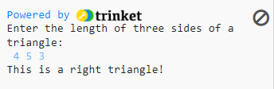
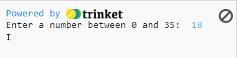
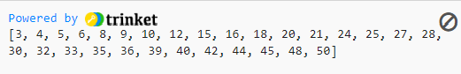
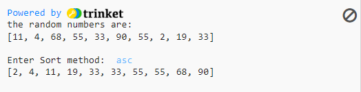
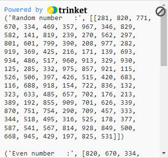
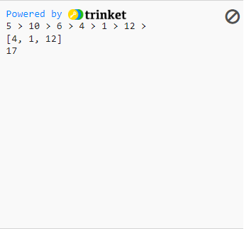

Answered by:
John Angelo Philip M. Vergel
Level 1: (4 points each)
1. Differentiate between SIMD and MIMD ? Explain
SIMD uses only one instruction to process a large amount of data or multiple data sets at the same time. For example, the instructions state to add 1 to the data, which is 4, 5, and 6. While the MIMD applies multiple instructions to multiple data sets at the same time. So, instead of adding 1 to 4, 5, and 6, we will add 1 to 4, 2 to 5, 3 to 6, and so on. In terms of performance, SIMD is less efficient and requires less memory.
Level 2: (5 points each)
1. How does parallel programming/computing works? What do you think will be the advantage of utilizing parallel approach?
the parallel computing is a technique of dividing a problem into smaller task that can be executed at the same time by utilizing numerous computer resources. For example, when we want to plot a graph or build a table of data, instead of doing it one at a time, we may display more points of the graph or fill more fields of the table at once when we do it in parallel. Parallel computing also provides speedier performance and allows us to run code more effectively, saving time and money.
2. In a right triangle, the square of the length of one side is equal to the sum of the squares of the lengths of the other two sides. Write a program that prompts the user to enter the length of the three sides of a triangle and then outputs a message indicating whether the triangle is a right triangle.
Output:
3. Write a program that prompts the user to input a number between 0 and 35. If the number is less than or equal to 9, the program should output the number; otherwise, it should output A for 10, B for 11, C for 12… and Z for 35.
Output:
4. Write a program that will display all numbers divisible by 3, 4 and 5 from 1-50.
Output:
Level 3: (6 points each)
1. Differentiate between Multiprocessing and Multithreading then Explain.
The difference between multiprocessing and multithreading is that multiprocessing is a system with multiple processor and the creation of a process in multiprocessing is both slow and resource-specific but multiprocessing will help you to increase the computing power while the multithreading is a program that executes a technique in which it allows a single process to have multiple code segments and the creation of its thread is cost effective in time and resource, multithreading will also help you to create computing threads of a single process to increase computing power.
2. Explain the difference between Serial Computing and Parallel Computing.
the serial computing is a kind of processing that uses a single processor to accomplish one task at a time, whereas parallel computing can use multiple processors to do multiple tasks at the same time. an example of this is when we are teaching someone while drawing and there's two types to do it. the first one is we can sketch first before explaining what we've drawn. then second is we can explain to someone while we are drawing. Serial computing is also slower than parallel computing and there are barely a little remaining who still use it.
3. Create a function in Python that accepts two parameters. The first will be a list of numbers. The second parameter will be a string that can be one of the following values: asc, desc, and none. If the second parameter is "asc," then the function should return a list with the numbers in ascending order. If it's "desc," then the list should be in descending order, and if it's "none," it should return the original list unaltered.
Output:
Level 4: (10 points each)
1. Write a program that will generate 100 3-digit random numbers and store it in a list. The program should display the following:
a. All elements in the list
b. All numbers grouped by odd and even numbers
c. All numbers divisible by 9.
d. All prime numbers
e. All numbers that contain the digit 9 (e.g 29, 91, 393, 961)
Output:
2. Given a linked list of size K, your task is to complete the function sum_of_lastN_nodes(), which should return the sum of last N nodes of the linked list. The function takes two arguments as input, the reference pointer of the head of the linked list and the integer N. Example:
5->10->6->4->1->12
N = 3
sum_of_lastN_nodes(6, N)
Output: Sum of last three nodes in the linked list is 4 + 1 + 12 = 15.
Output:
